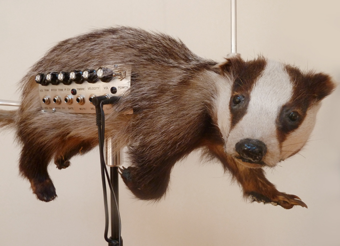

Wednesday, January the 11th, 2012
back to: title, date or indexes
Is it a badger? Is it a theremin? No, it's the badgermin, quite possibly the finest badger-related electronic musical instrument ever devised.

You can see more of David Cranmer's electrical instruments, mechanical sculptures, robots, etc., on his website.